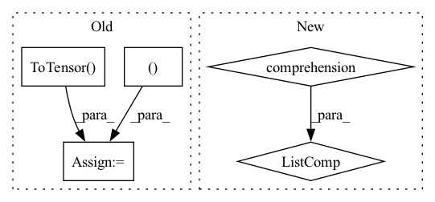

Pattern ID :27772
Before Change
if os.path.splitext(file)[-1].lower() in IMG_EXT:
raw_img_list.append(os.path.join(root, file))
img_list = [transforms.Normalize(0.5, 0.5)(
transforms.ToTensor() (
Image.open(img).convert("L").resize((args.image_size, args.image_size ), Image.BICUBIC)
)
).unsqueeze(dim=0) for img in raw_img_list]
img_list = torch.cat(img_list, dim=0)
img_list = torch.repeat_interleave(img_list, repeats=2, dim=1)
img_dataset = TensorDataset(img_list)
img_dataloader = DataLoader(img_dataset, batch_size=args.batch_size, shuffle=False, num_workers=4)
return raw_img_list, img_dataloaderAfter Change
for file in files:
if os.path.splitext(file)[-1].lower() in IMG_EXT:
raw_img_list.append(os.path.join(root, file))
img_list = [collate_fn(img_path) for img_path in raw_img_list]
img_list = torch.cat(img_list, dim=0)
// img_list = torch.repeat_interleave(img_list, repeats=2, dim=1)
img_dataset = TensorDataset(img_list)
img_dataloader = DataLoader(img_dataset, batch_size=args.batch_size, shuffle=False, num_workers=4)In pattern: SUPERPATTERN
Frequency: 3
Non-data size: 5
Instances Fragment ID: 82251198
Project Name: euphoriayan/zi2zi-pytorch
Commit Name: 1404e8ce0e981768a783d61495f797b7cc6cf45d
Time: 2021-01-08
Author: ysq58000@foxmail.com
File Name: category.py
M Class Name: AnonimousClass
N Class Name: AnonimousClass
M Method Name: load_val_dataloader(1)
N Method Name: load_val_dataloader(1)
M Parent Class:
N Parent Class:
M File Name: category.py
N File Name: category.py
M Start Line: 37
M End Line: 48
N Start Line: 54
N End Line: 59
Before Change
def __init__(self, image_size, min_year=2005):
self.image_paths = self._load(min_year)
self.length = len(self.image_paths)
self.transform = transforms.Compose([
transforms.Resize((image_size, image_size )),
transforms.RandomHorizontalFlip(),
transforms.ToTensor() ,
transforms.Normalize(0.5, 0.5)
])
After Change
"""
def __init__(self, image_size, min_year=2005, transform=None):
super().__init__(image_size, transform)
self.images = [path for path in self.images if self._year_from_path(path) >= min_year]
def _year_from_path(self, path):
name, _ = os.path.splitext(os.path.basename(path))
year = int(name.split("_")[-1]) Fragment ID: 82251197
Project Name: stomoya/animeface
Commit Name: 21e86e8dc2d49667e6edb8863004a229eeb6798a
Time: 2021-02-20
Author: blackie0110@gmail.com
File Name: implementations/general/anime_face.py
M Class Name: YearAnimeFaceDataset
N Class Name: YearAnimeFaceDataset
M Method Name: __init__(4)
N Method Name: __init__(3)
M Parent Class: AnimeFaceDataset
N Parent Class: Dataset
M File Name: implementations/general/anime_face.py
N File Name: implementations/general/anime_face.py
M Start Line: 49
M End Line: 56
N Start Line: 30
N End Line: 32
Before Change
def show_misclassified(misclassified_dictionary, is_dicom = True, num_of_images = 16, figure_size = (5,5)):
row = int(math.sqrt(num_of_images))
sample = random.sample(list(misclassified_dictionary), num_of_images)
transform= transforms.Compose([transforms.Resize((244, 244 )),transforms.ToTensor() ])
if is_dicom:
imgs = [torch.from_numpy(dicom_to_narray(i)) for i in sample]
else:After Change
imgs = [torch.from_numpy(dicom_to_narray(i)) for i in sample]
else:
imgs = [transforms(Image.open(i).convert("RGB")) for i in sample]
titles = [(str(i["true_label"]),",", str(i["predicted_label"]),",", str(i["accuarcy"])+"%") for i in sample]
// grid = torchvision.utils.make_grid(imgs, nrow=row)
// plt.figure(figsize=(figure_size))
// plt.imshow(np.transpose(grid, (1,2,0)))
plot_images(images=imgs, titles=titles, figure_size=figure_size) Fragment ID: 82251196
Project Name: radtorch/radtorch
Commit Name: 3834eba24d28be2da3399132117d6be36eb143d7
Time: 2020-03-27
Author: elbanan@users.noreply.github.com
File Name: radtorch/visutils.py
M Class Name: AnonimousClass
N Class Name: AnonimousClass
M Method Name: show_misclassified(5)
N Method Name: show_misclassified(4)
M Parent Class:
N Parent Class:
M File Name: radtorch/visutils.py
N File Name: radtorch/visutils.py
M Start Line: 44
M End Line: 51
N Start Line: 78
N End Line: 90